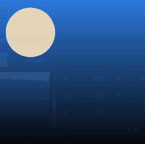
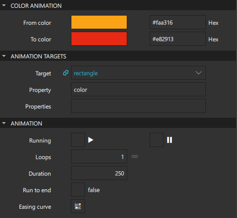
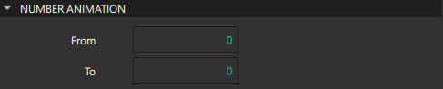
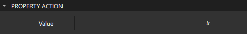
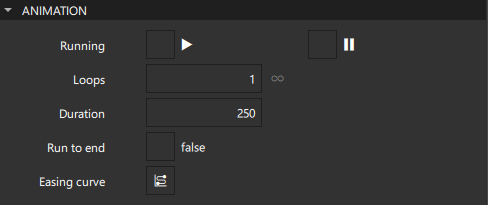

Animations
To create an animation, use the appropriate animation type for the property that is to be animated, and apply the animation depending on the type of behavior that is required.
You can drag-and-drop animation components from Components > Default Components > Animation to the Navigator or 2D view to create instances of them.
You can achieve similar results by using different animation techniques. For more information, see Introduction to Animation Techniques.
Applying Animation
A property animation is applied when the value of a property changes. Color and number animations are property animation types for specific purposes. Specify settings for animations in Properties > Animation Targets.
Animating Color Changes
For example, you can apply animation to the value of the Color property of an instance of a Rectangle component to change its value from its current color to another color over a period of time specified in milliseconds.

First create an instance of the Color Animation component. Select the component to animate in the Target field, and enter the property to animate in the Property field. To animate several properties, enter them into the Properties field separated by commas.

Select the original color in the From color field and the new color in the To color field. Specify the duration of the animation in the Duration field.
Animating Changes in Numerical Values
Similarly, to apply animation when a numerical value of a property changes, create an instance of the Number Animation component.

Select the original value in the From field and the new value in the To field. Then specify the duration of the animation in the Duration field.
For example, you can apply animation to the value of the X property of a Rectangle instance to make it appear to move from its current position on the x axis to another position over a period of time specified in milliseconds. To make the component appear to move both on the x and y axis, enter x and y into the Properties field separated by a comma.
For an example of using property animation to animate the scale and opacity of components, see the Coffee Machine example.
Setting Non-Animated Properties
To immediately change a property value during an animation without animating the property change, create an instance of the Property Action component instead, and set the value in the Value field. This is useful for setting non-animated property values during an animation.

For example, you can create an instance of the Sequential Animation component that contains two instances of the Property Action component around an instance of the Number Animation component. The first property action sets the Opacity property of a Rectangle to 0.5, the number animation changes the width of the image, and the second property action sets the opacity back to 1.
Playing Animations
Specify settings for playing animations in the Animation group.

To run animations automatically, select the Running check box. Animations are run for the time you specify in the Duration field.
You can connect the running property of an animation to a signal emitted by a component to play the animation when users click a button, for example. For more information, see Connecting Components to Signals.
To run animations several times in a loop, set the number of times they should play in the Loops field. Set the value to -1 to have the animation continuously repeat until it is explicitly stopped.
To specify that animations should run to completion when they are stopped, select the Run to end check box. This behavior is most useful when the Loops property is set, as the animation will finish playing normally but not restart.
All animations defined for a component are run in parallel, unless you include them in a Parallel Animation or Sequential Animation component for managing them as a group.
To pause animations, select the  (Paused) check box.
(Paused) check box.
To attach an easing curve to the animation, select the  (Easing Curve Editor) button in the Easing Curve field.
(Easing Curve Editor) button in the Easing Curve field.
Playing Groups of Animations
You can create several animations that can run in parallel or in sequence. To manage a group of animations that will play at the same time, create an instance of a Parallel Animation component and drag-and-drop the other animations to it. To play the animations in the specified order, one after the other, create an instance of a Sequential Animation instead.
For example, a banner component may have several icons or slogans to display, one after the other. The value of the Opacity property could change to 1.0 denoting an opaque object. Using a sequential animation, each opacity animation will play after the preceding animation finishes, whereas using a parallel animation will play the animations at the same time.
Once individual animations are placed into a group of parallel or sequential animations, they can no longer be started and stopped independently. The sequential or parallel animations must be started and stopped as a group.
When used in a Sequential Animation, a Pause Animation is a step when nothing happens, for a specified duration. To specify a pause between two animations, select the Paused check box and specify the duration of the pause in the Duration field.
Performance Considerations
Qt Design Studio enables you to use fluidity and dynamic transitions as well as visual effects to great effect in a UI. However, you need to take some care when using some of the supported features because they can affect the performance of the UI.
In general, animating a property will cause any bindings which reference that property to be re-evaluated. Usually, this is what is desired, but in some cases it may be better to disable the binding prior to performing the animation and then reassign the binding once the animation has completed.
Avoid running JavaScript during animation. For example, running a complex JavaScript expression for each frame of an x property animation should be avoided.
Take special care when creating instances of the Script Action component because script animations are run in the main thread and can therefore cause frames to be skipped if they take too long to complete.
Summary of Animation Components
The following table lists the components that you can use to animate component properties programmatically. They are available in Components > Default Components > Animation.
| Component | Use Case |
|---|---|
| Property Animation | Applying animation when the value of a property changes. Color and number animations are property animation types for specific purposes. |
| Property Action | Setting non-animated property values during an animation. |
| Color Animation | Applying animation when a color value changes. |
| Number Animation | Applying animation when a numerical value changes. |
| Parallel Animation | Running animations in parallel. |
| Sequential Animation | Running animations sequentially. |
| Pause Animation | Creating a step in a sequential animation where nothing happens for a specified duration. |
| Script Action | Executing JavaScript during an animation. |